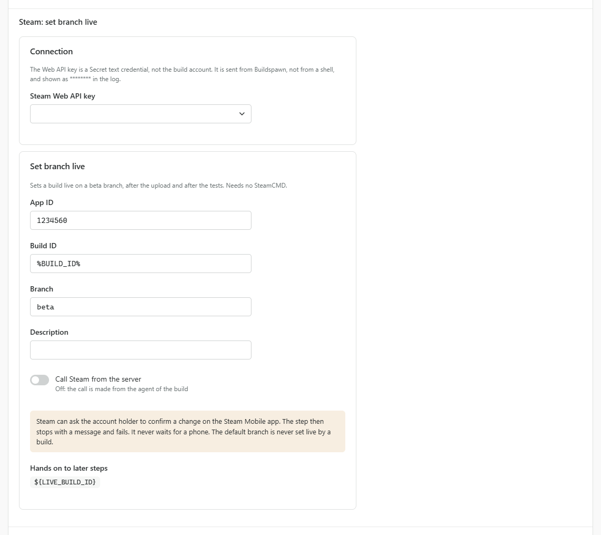

Steam: set branch live
Set an uploaded build live on a Steam beta branch, after your tests have passed.
When to use it
Use it when you do not want to publish at upload time. Upload with Steam upload and leave Set live on branch empty, run your tests, and then use this step. It needs no SteamCMD. It calls Steam's Web API with your Web API key.
How to set it up
- Add a Secret text credential that holds your publisher Steam Web API key.
- Open the build configuration and go to Settings › Build steps › Add build step › Steam: set branch live.
- Choose the Steam Web API key.
- Type the App ID and the Branch. Leave Build ID on
%BUILD_ID%. - Click Save.

Every field
| Field | What it does | Default | Example |
|---|---|---|---|
| Steam Web API key | A Secret text credential. It is sent from Buildspawn, not from a shell, and shown as ******** in the log. | None | steam-web-key |
| App ID | Your app number. | None | 1000480 |
| Build ID | The build to set live. Must be a number. | %BUILD_ID% | %BUILD_ID% |
| Branch | The beta branch. Required. default and public are refused, and the form tells you so. | None | nightly |
| Description | Optional text for the build in Steamworks. | Empty | Passed smoke tests |
| Call Steam from the server | Off: the call is made from the agent of the build. On: from the Buildspawn server. | Off | Off |
| Hands on to later steps | LIVE_BUILD_ID: the build that is live on the branch. | Not editable |
Steam can ask the account holder to confirm a change on the Steam Mobile app. The step then stops with a message and fails. It never waits for a phone. The default branch is never set live by a build.
Who may use it
Both adding this step and running a build that sets a branch live need Steam / Set branch live on the build configuration. See the overview.
A worked example
A nightly job uploads build 15870342, runs automated tests, then runs this step with branch nightly and the description Passed smoke tests. Testers who opted into nightly in Steam get the build.
What you see when it runs
- A line with the app, build and branch and the key as
********, then answered …. LIVE_BUILD_IDis set for later steps.
Problems and fixes
| Message | What to do |
|---|---|
| The branch … cannot be set live by a build. Set it live on the Builds page in Steamworks. | You used default or public. Use a beta branch. |
| Steam wants the account holder to confirm this change in the Steam Mobile app | A job cannot confirm it. Set the build live on the Builds page in Steamworks, or confirm on the phone and run the step again. |
| The person who started this build may not set a branch live on Steam | Give that person Steam / Set branch live. Nothing was sent to Steam. |
| The branch is missing / The build ID … is missing or is not a number | Fill in the field, and make sure the upload step set BUILD_ID. |
| Steam answered …: … | Steam refused the call. Check the key, the App ID and that the branch exists. |
| Steam did not answer | The network call failed. Check that the agent (or the server) can reach Steam. |